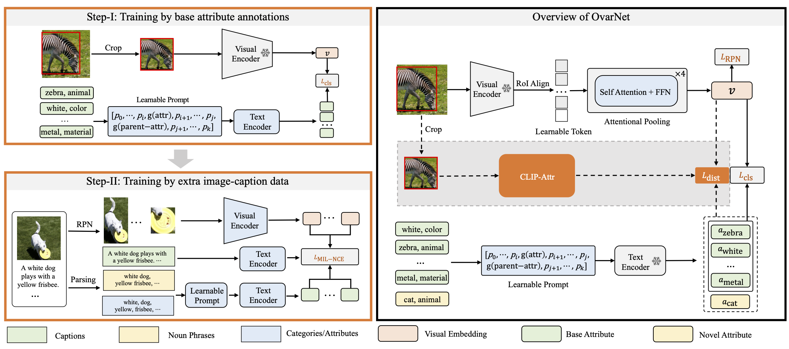
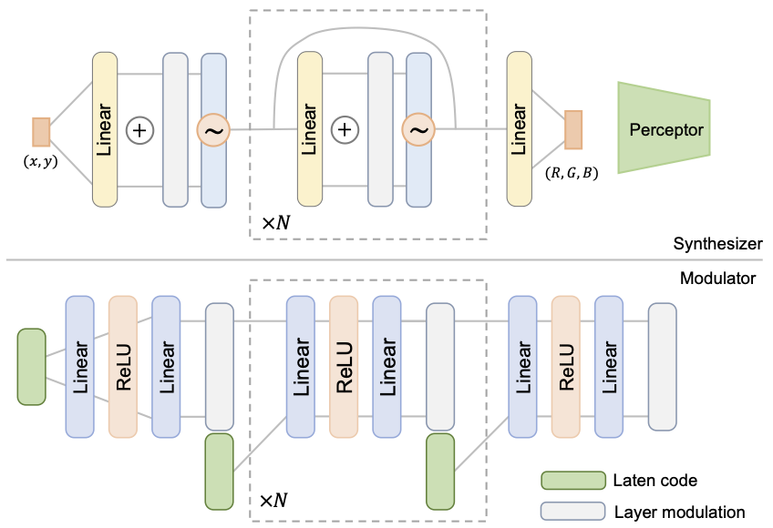
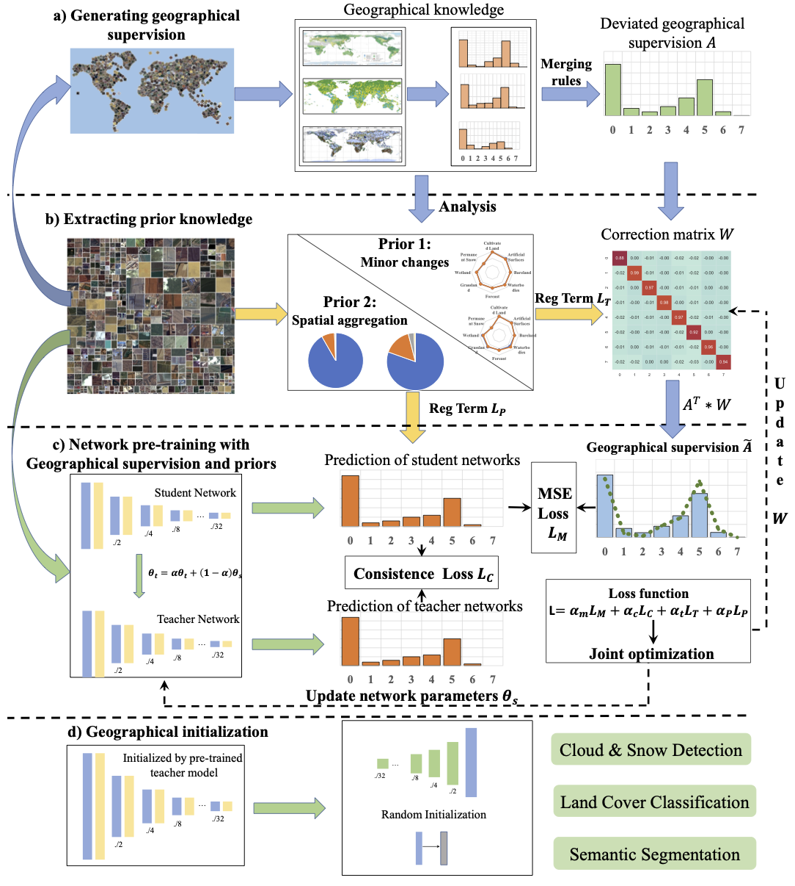
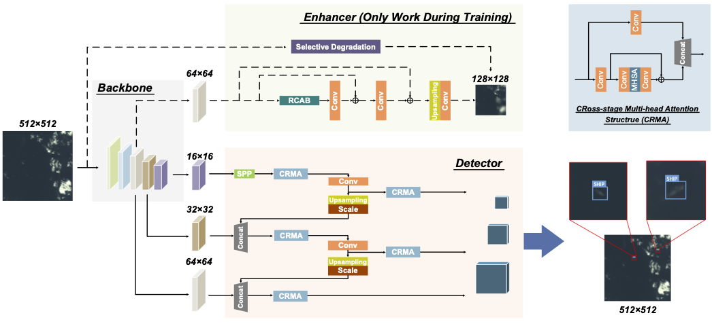
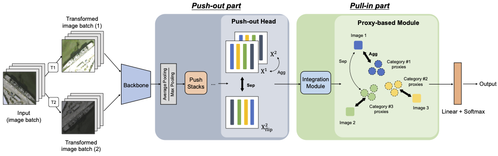
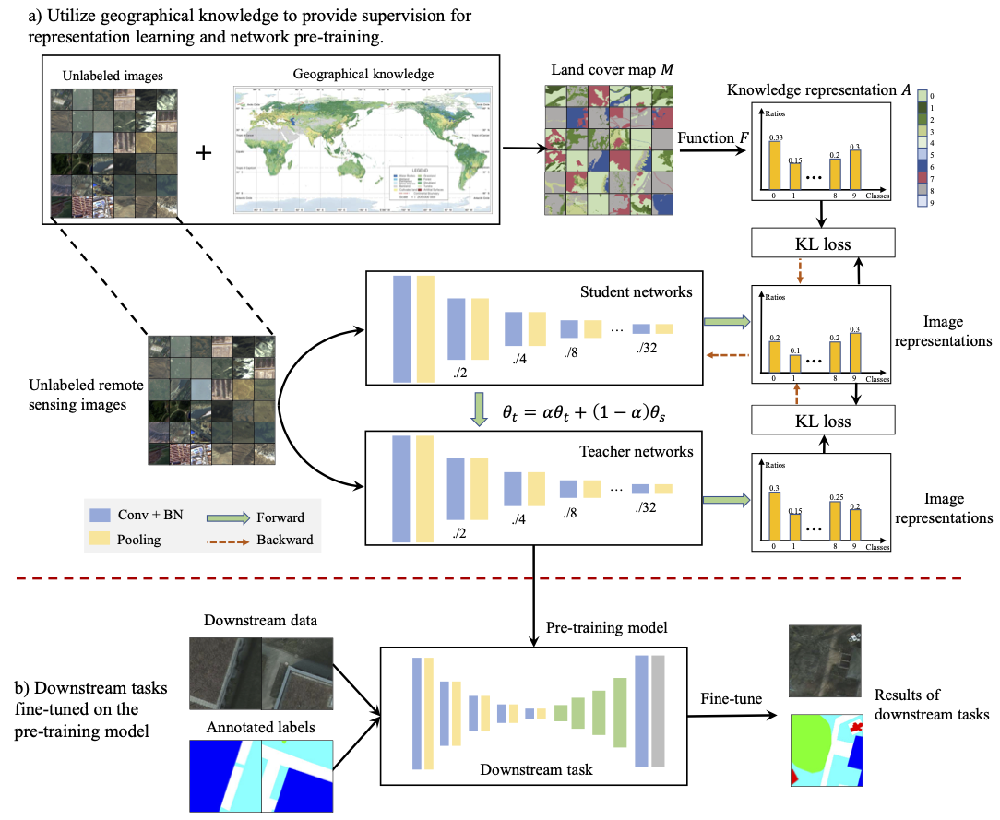

Keyan Chen (陈科研)Ph.D. Student, Beihang UniversityCV (2023.1) • Google Scholar • Semantic Scholar • GitHub |
About Me
I am a Ph.D. student in the LEVIR lab. at Beihang University, advised by Prof. Zhenwei Shi and Prof. Zhengxia Zou. Before that, I received my B.S. and M.S. degree in Image Processing Center at Beihang University.
My research interests lie in the remote sensing image processing, deep learning and multimodal.
News
2023.01: Our Survey on Object Detection is Accepted by Proceedings of the IEEE (IF=14.91).
2023.01: Three Papers are Accepted by TGRS (IF=8.125) in 2022.
Recent Publications (Selected)

|
Continuous Remote Sensing Image Super-Resolution based on Context Interaction in Implicit Function Space
Arxiv, 2023 Keyan Chen, Wenyuan Li, Sen Lei, Jianqi Chen, Xiaolong Jiang, Zhengxia Zou, and Zhenwei Shi [PDF] [Code] [Page] [Demo]
We propose a new super-resolution framework based on context interaction in implicit function space for learning continuous representations of remote sensing images, called FunSR, which consists of three main components: a functional representor, a functional interactor, and a functional parser.
| |
|
|
||
|  |
OvarNet: Towards Open-vocabulary Object Attribute Recognition
Arxiv, 2023 Keyan Chen, Xiaolong Jiang, Yao Hu, Xu Tang, Yan Gao, Jianqi Chen and Weidi Xie [PDF] [Code] [Page]
We consider the problem of simultaneously detecting objects and inferring their visual attributes in an image, even for those with no manual annotations provided at the training stage, resembling an open-vocabulary scenario.
| |
|
|
||

|
Object Detection in 20 Years: A Survey
Proceedings of the IEEE (P IEEE), 2023 Zhengxia Zou, Keyan Chen, Zhenwei Shi, Yuhong Guo and Jieping Ye [PDF] [Code] [Page]
This paper extensively reviews the fast-moving research field in the light of technical evolution, spanning over a quarter-century's time (from the 1990s to 2022). A number of topics have been covered, including the milestone detectors in history, detection datasets, metrics, fundamental building blocks of the detection system, speed-up techniques, and the recent state-of-the-art detection methods.
| |
|
|
||
|  |
Resolution-agnostic Remote Sensing Scene Classification with Implicit Neural Representations
IEEE Geoscience and Remote Sensing Letters (GRSL), 2022 Keyan Chen, Wenyuan Li, Jianqi Chen, Zhengxia Zou and Zhenwei Shi [PDF] [Code] [Page]
We propose a novel scene classification method with scale and resolution adaptation ability. Unlike previous CNNbased methods that make predictions based on rasterized image inputs, the proposed method converts the images as continuous functions with INRs optimization and then performs classification within the function space.
| |
|
|
||
|  |
Geographical Supervision Correction for Remote Sensing Representation Learning
IEEE Transactions on Geoscience and Remote Sensing (TGRS), 2022 Wenyuan Li, Keyan Chen, and Zhenwei Shi [PDF]
We propose a Geographical supervision Correction method (GeCo) for remote sensing representation learning. Deviated geographical supervision generated by GLC products can be corrected adaptively using the correction matrix during network pre-training and joint optimization process is designed to simultaneously update the correction matrix and network parameters.
| |
|
|
||
|  |
A Degraded Reconstruction Enhancement-based Method for Tiny Ship Detection in Remote Sensing Images with A New Large-scale Dataset
IEEE Transactions on Geoscience and Remote Sensing (TGRS), 2022 Jianqi Chen, Keyan Chen, Hao Chen, Zhengxia Zou and Zhenwei Shi [PDF] [Code] [Dataset]
We propose a tiny ship detection method namely, Degraded Reconstruction Enhancement Network (DRENet), for medium-resolution remote sensing images, and introduce Levir-Ship, which contains 3876 GF-1/GF-6 multi-spectral images and over 3K tiny ship instances.
| |
|
|
||
|  |
Contrastive Learning for Fine-grained Ship Classification in Remote Sensing Images
IEEE Transactions on Geoscience and Remote Sensing (TGRS), 2022 Jianqi Chen, Keyan Chen, Hao Chen, Wenyuan Li, Zhengxia Zou, and Zhenwei Shi [PDF] [Code]
We propose an asynchronous contrastive learning-based method for effective fine-grained ship classification, which refers to as "Push-and-Pull Network (P2Net)", includes a "push-out stage" and a "pull-in stage", where the first stage forces all the instances to be de-correlated and then the second one groups them into each subclass.
| |
|
|
||
|  |
Geographical Knowledge-Driven Representation Learning for Remote Sensing Images
IEEE Transactions on Geoscience and Remote Sensing (TGRS), 2021 Wenyuan Li, Keyan Chen, Hao Chen and Zhenwei Shi [PDF] [Code]
We propose a Geographical Knowledge-driven Representation learning method for remote sensing images (GeoKR), improving network performance and reduce the demand for annotated data. The global land cover products and geographical location associated with each remote sensing image are regarded as geographical knowledge to provide supervision for representation learning and network pre-training.
| |
|
|
||

|
Building Extraction from Remote Sensing Images with Sparse Token Transformers
Remote Sensing, 2021 Keyan Chen, Zhengxia Zou and Zhenwei Shi [PDF] [Code] [Page] [Demo]
We propose STT to explore the potential of using transformers for efficient building extraction. STT conducts an efficient dual-pathway transformer that learns the global semantic information in both their spatial and channel dimensions and achieves state-of-the-art accuracy on two building extraction benchmarks.
|
|
Currently, I have several papers under review as well. I wish that I will receive positive results. If you are interested in my research, please feel free to reach me.
|
Education
|
Ph.D. in Pattern Recognition and Intelligent System, Beihang University, China.
2022.9 - Present |
|
M.S. in Pattern Recognition and Intelligent System, Beihang University, China.
2019.9 - 2022.1 |
|
B.S. in Image Processing, Beihang University, China.
2015.9 - 2019.6 |
Selected Honors
- "Outstanding M.S. Dissertation Award" of Beihang, Beihang University, 2022, (Top 0.5%)
- "Outstanding Graduates" of Beijing, Beijing, 2022 (Top 1%)
- Second Prize of "AVIC Scholarship", Beihang University, 2021 (Top 2%)
- First Prize "Academic Scholarship for Postgraduates", Beihang University, 2019 and 2020 (Top 5%)
- Top 10 of "Semi-supervised Video Object Segmentation Algorithm Competition", Alibaba Tianchi (Top 10/947)
- "Outstanding B.S. Dissertation Award" of Beihang and Beijing, Beijing, 2019, (Top 0.5%)
- "Outstanding Graduates" of Beihang, Beihang University, 2019 (Top 5%)
- "Excellent Student" of Beihang, Beihang University, 2019 (Top 1%)
- Second Prize of the "9th Mechanical Innovation Design Competition", Beijing, 2018
- Second Prize of the "28th Fengru Cup Scientific and Technological Competition", 2018
- First Prize of the "Mathematics Modeling Competition", Beihang University, 2018 (Top 3%)
- First Prize of "Lee Kum Kee Astronautics Scholarship", Beihang University, 2018 (Top 0.5%)
- Special Scholarship of "Outstanding Academic Performance", Beihang University, 2018 (Top 2%)
Contact
|
Email: kychen@buaa.edu.cn
Address: Room D7, Shahe Main building, Beihang University, Beijing
|